Relatório técnico de arquitetura, infraestrutura como código, containers, Machine Learning, MySQL e observabilidade
Nome do Grupo: Predictfy
| Integrante | RM |
|---|---|
| Elton Vinicios Almeida de Oliveira | 562187 |
| Emerson dos Santos Silva | 562033 |
| Kelvin Douglas Ribeiro Rabelo | 561538 |
| Pedro Henrique Simão Soares | 562283 |
| Vitor Lucas Mattos de Brito Mariano | 562116 |
Transformar a lógica de AIOps da Predictfy em uma execução verificável no Microsoft Azure, com imagens privadas no ACR, dois containers no ACI, consumo de artefato de ML, persistência no Azure Database for MySQL e sinais no Azure Monitor, Log Analytics e Application Insights.
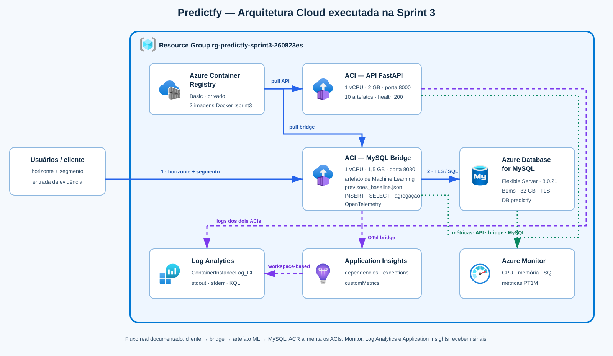
Figura 1 — arquitetura executada. Ícones do pacote oficial Azure Public Service Icons V24, Microsoft Architecture Center.
predictfy-api:sprint3 e predictfy-mysql-bridge:sprint3.previsoes_baseline.json, calcula a saída, persiste sua proveniência no MySQL e expõe consulta e agregação.| Serviço | Configuração executada | Justificativa |
|---|---|---|
| Resource Group | rg-predictfy-sprint3-260823es | governança e descarte atômico |
| ACR | Basic, admin temporariamente habilitado | registro privado e build remoto |
| ACI API | 1 vCPU, 2 GB, :8000 | API e artefatos atuais |
| ACI Bridge | 1 vCPU, 1,5 GB, :8080 | integração ML–MySQL isolada |
| MySQL | B1ms, 32 GB, backup 1 dia | menor SKU acadêmico funcional |
| Log Analytics | 30 dias | consulta KQL de stdout/stderr |
| Application Insights | workspace-based | APM via OpenTelemetry |
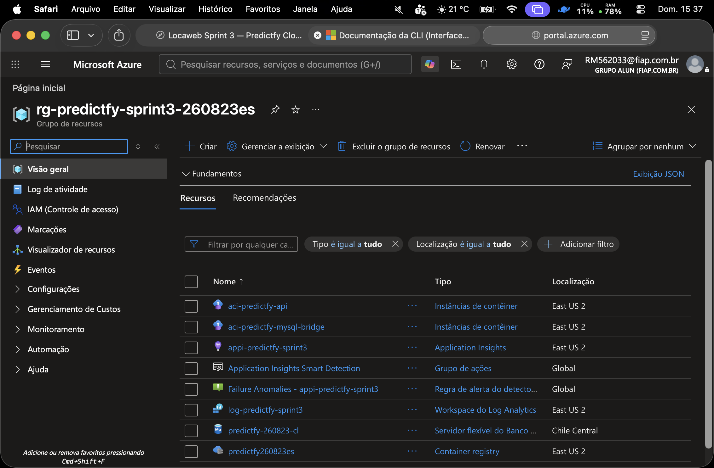
O provisionamento parte do config.example.env. Valores sensíveis são fornecidos somente no ambiente do shell e injetados como secure-environment-variables.
cp iac/config.example.env iac/config.env # editar nomes e segredos localmente; não versionar set -a source iac/config.env set +a az login az account show --output table
bash 'Sprint 3/01_cloud/iac/01_provision.sh'
O script valida todas as variáveis, cria o Resource Group, Log Analytics, Application Insights, ACR, MySQL e banco. Tags Project, Sprint, Discipline e Environment permitem rastrear finalidade e custo.
Nome Tipo Regiao ------------------------------------------ -------------------------------------------------- ------------ log-predictfy-sprint3 Microsoft.OperationalInsights/workspaces eastus2 appi-predictfy-sprint3 Microsoft.Insights/components eastus2 predictfy260823es Microsoft.ContainerRegistry/registries eastus2 predictfy-260823-cl Microsoft.DBforMySQL/flexibleServers chilecentral aci-predictfy-api Microsoft.ContainerInstance/containerGroups eastus2 aci-predictfy-mysql-bridge Microsoft.ContainerInstance/containerGroups eastus2 Application Insights Smart Detection microsoft.insights/actiongroups global Failure Anomalies - appi-predictfy-sprint3 microsoft.alertsmanagement/smartDetectorAlertRules global
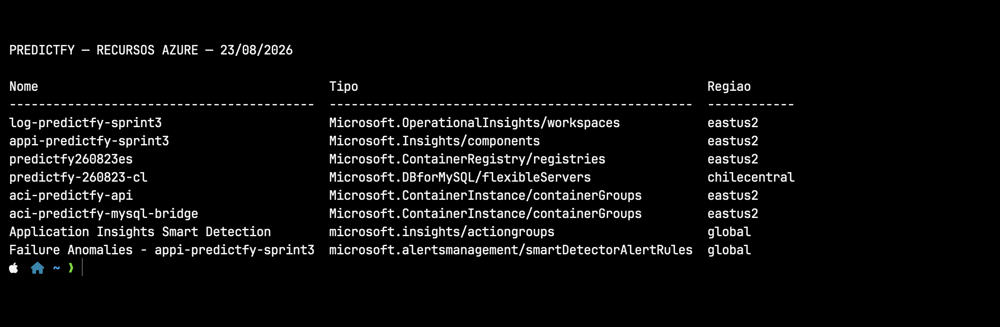
O arquivo mysql_ephemeral.bicep declara MySQL 8.0.21, tier Burstable, SKU Standard_B1ms, 32 GB, backup de um dia, sem HA e sem geobackup. A região Chile Central foi necessária porque a assinatura Azure for Students devolveu ProvisionNotSupportedForRegion nas demais regiões testadas.
az mysql flexible-server show -g $AZ_RESOURCE_GROUP -n $AZ_MYSQL_SERVER --query '{Estado:state,Versao:version,SKU:sku.name,Retencao:backup.backupRetentionDays}' -o json
{
"Estado": "Ready",
"FQDN": "predictfy-260823-cl.mysql.database.azure.com",
"GeoBackup": "Disabled",
"Nome": "predictfy-260823-cl",
"RetencaoDias": 1,
"SKU": "Standard_B1ms",
"StorageGB": 32,
"Tier": "Burstable",
"Versao": "8.0.21"
}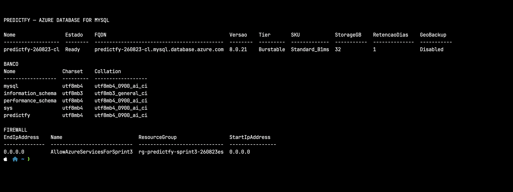
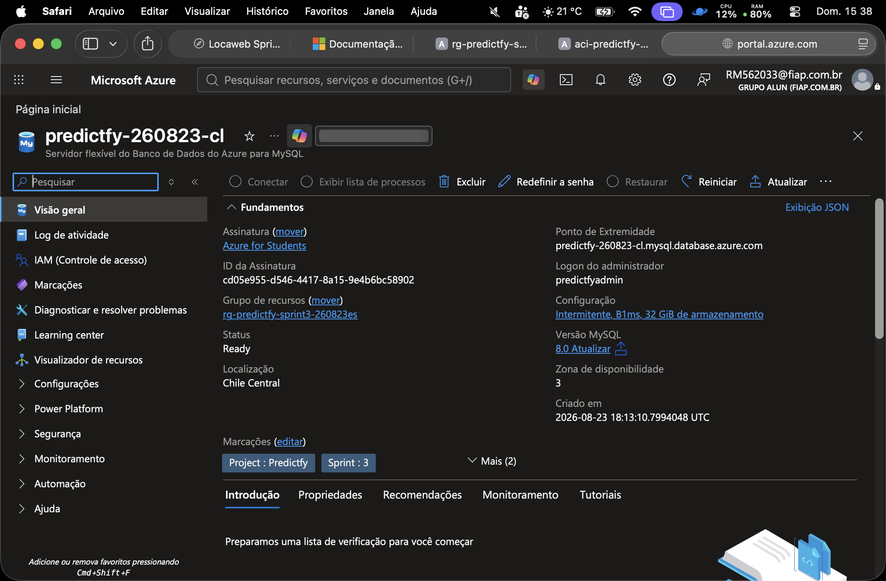
az acr build --registry $AZ_ACR_NAME --image predictfy-api:sprint3 --file locaweb/api/Dockerfile locaweb az acr build --registry $AZ_ACR_NAME --image predictfy-mysql-bridge:sprint3 --file 'Sprint 3/01_cloud/app_mysql/Dockerfile' . az acr repository show-tags -n $AZ_ACR_NAME --repository predictfy-api -o json az acr repository show-tags -n $AZ_ACR_NAME --repository predictfy-mysql-bridge -o json ["sprint3"] ["sprint3"]
O ACR fez os builds sem exigir Docker local. As imagens foram mantidas privadas, versionadas e consumidas pelos ACIs.
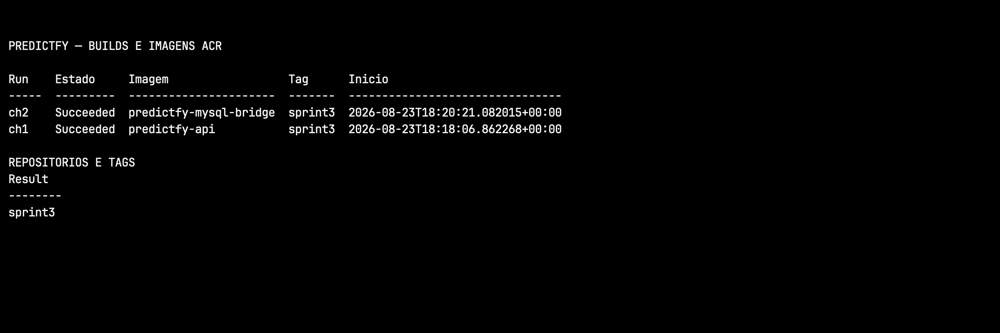
az container show -g $AZ_RESOURCE_GROUP -n $AZ_CONTAINER_NAME --query '{Nome:name,Estado:instanceView.state,FQDN:ipAddress.fqdn,Imagem:containers[0].image}' -o json
API:
{
"CPU": 1.0,
"Estado": "Running",
"FQDN": "predictfy-api-260823es.eastus2.azurecontainer.io",
"IP": "135.232.51.212",
"Imagem": "predictfy260823es.azurecr.io/predictfy-api:sprint3",
"MemoriaGB": 2.0,
"Nome": "aci-predictfy-api"
}
BRIDGE:
{
"CPU": 1.0,
"Estado": "Running",
"FQDN": "predictfy-bridge-260823es.eastus2.azurecontainer.io",
"IP": "20.96.209.32",
"Imagem": "predictfy260823es.azurecr.io/predictfy-mysql-bridge:sprint3",
"MemoriaGB": 1.5,
"Nome": "aci-predictfy-mysql-bridge"
}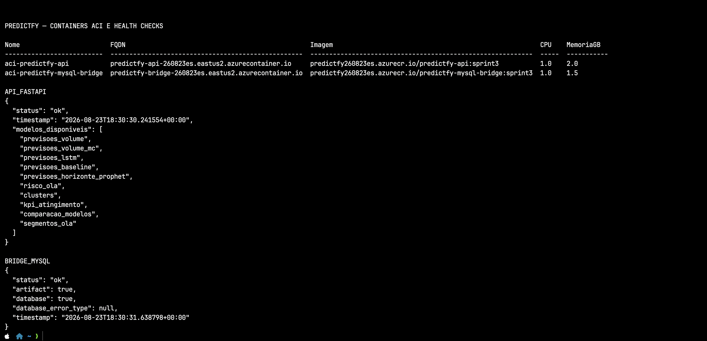
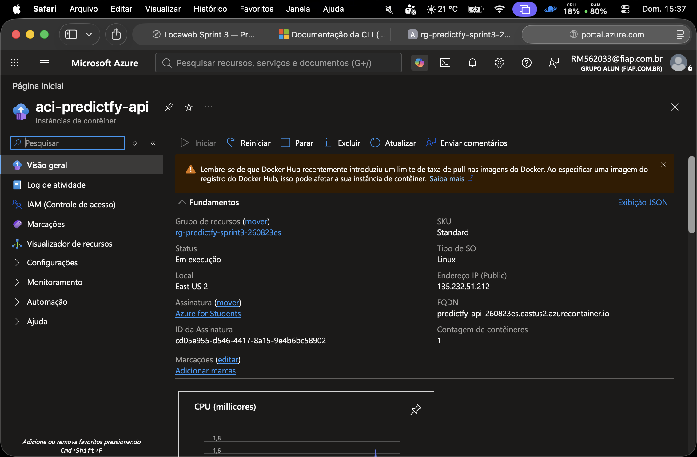
az container logs -g $AZ_RESOURCE_GROUP -n aci-predictfy-api INFO: Started server process [18] INFO: Waiting for application startup. INFO: Application startup complete. INFO: Uvicorn running on http://0.0.0.0:8000 (Press CTRL+C to quit) [startup] Modelos disponíveis em outputs/: ['previsoes_volume', 'previsoes_volume_mc', 'previsoes_lstm', 'previsoes_baseline', 'previsoes_horizonte_prophet', 'risco_ola', 'clusters', 'kpi_atingimento', 'comparacao_modelos', 'segmentos_ola'] INFO: 10.92.0.11:49549 - "GET /api/health HTTP/1.1" 200 OK INFO: 10.92.0.11:51736 - "GET /api/health HTTP/1.1" 200 OK INFO: 10.92.0.10:55406 - "GET / HTTP/1.1" 404 Not Found WARNING: Invalid HTTP request received. INFO: 10.92.0.10:55491 - "GET / HTTP/1.1" 404 Not Found WARNING: Invalid HTTP request received. INFO: 10.92.0.11:52541 - "POST /mcp HTTP/1.1" 404 Not Found
O health check retornou HTTP 200 e o startup listou dez conjuntos de artefatos: previsões de volume, LSTM, baseline, horizonte Prophet, risco OLA, clusters, KPI, comparação de modelos e segmentos.
Evidência 4 — stdout real do ACI API.
O bridge é uma FastAPI mínima criada para demonstrar, sem alterar o MVP online, o consumo de um resultado real de ML e sua persistência. O artefato é lido em modo somente leitura e recebe SHA-256 para proveniência.
POST /executions/capture 1. valida X-Bridge-Key 2. lê previsoes_baseline.json 3. extrai segmento total e horizonte D+1 4. gera correlation_id e SHA-256 5. executa INSERT e COMMIT Resultado registrado: baseline_sazonal_7d · D+1 · total · 44,0
CREATE TABLE IF NOT EXISTS execucao_analitica (
id BIGINT UNSIGNED NOT NULL AUTO_INCREMENT,
correlation_id CHAR(36) NOT NULL,
modelo VARCHAR(80) NOT NULL,
horizonte VARCHAR(20) NOT NULL,
segmento VARCHAR(40) NOT NULL,
valor_previsto DECIMAL(14,4) NOT NULL,
origem_artefato VARCHAR(160) NOT NULL,
artefato_sha256 CHAR(64) NOT NULL,
executado_em_utc TIMESTAMP(6) NOT NULL DEFAULT CURRENT_TIMESTAMP(6),
PRIMARY KEY (id),
UNIQUE KEY uq_execucao_correlation (correlation_id),
KEY ix_execucao_modelo_data (modelo, executado_em_utc),
CONSTRAINT ck_execucao_valor_nao_negativo CHECK (valor_previsto >= 0)
) ENGINE=InnoDB DEFAULT CHARACTER SET utf8mb4 COLLATE utf8mb4_0900_ai_ci;A chave única de correlação impede duplicidade; o índice por modelo/data suporta auditoria; o CHECK impede valores negativos. O charset utf8mb4 mantém compatibilidade textual.
bash 'Sprint 3/01_cloud/iac/05_exercise_mysql.sh' [1/4] GET /health → 200 OK [2/4] POST /executions/capture → 200 OK [INSERT] [3/4] GET /executions?limit=10 → 200 OK [SELECT] [4/4] GET /executions/summary → 200 OK [COUNT + AVG + GROUP BY] modelo=baseline_sazonal_7d | horizonte=D+1 | segmento=total media_prevista=44.00
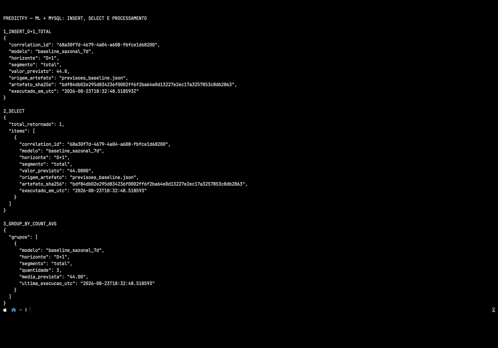
az container logs -g $AZ_RESOURCE_GROUP -n aci-predictfy-mysql-bridge INFO: Started server process [19] INFO: Waiting for application startup. INFO: Application startup complete. INFO: Uvicorn running on http://0.0.0.0:8080 (Press CTRL+C to quit) INFO: 10.92.0.21:52127 - "GET /health HTTP/1.1" 200 OK INFO: 10.92.0.21:52133 - "POST /executions/capture HTTP/1.1" 200 OK INFO: 10.92.0.21:52141 - "GET /executions?limit=10 HTTP/1.1" 200 OK INFO: 10.92.0.21:52145 - "GET /executions/summary HTTP/1.1" 200 OK INFO: 10.92.0.19:51968 - "GET /executions HTTP/1.1" 401 Unauthorized INFO: 10.92.0.19:53621 - "GET /health HTTP/1.1" 200 OK INFO: 10.92.0.21:54005 - "POST /executions/capture HTTP/1.1" 422 Unprocessable Entity INFO: 10.92.0.19:53758 - "GET /executions/summary HTTP/1.1" 401 Unauthorized INFO: 10.92.0.21:54178 - "POST /executions/capture HTTP/1.1" 200 OK INFO: 10.92.0.19:53962 - "GET /executions?limit=2 HTTP/1.1" 200 OK INFO: 10.92.0.21:54185 - "GET /executions/summary HTTP/1.1" 200 OK INFO: 10.92.0.19:54149 - "POST /executions/capture HTTP/1.1" 200 OK INFO: 10.92.0.21:54350 - "GET /executions?limit=1 HTTP/1.1" 200 OK INFO: 10.92.0.19:54152 - "GET /executions/summary HTTP/1.1" 200 OK
Os 200 confirmam health, inserção, consulta e agregação. O 401 comprova rejeição controlada de chamada sem chave. Os 404 são sondagens externas e não indicam falha dos endpoints documentados.
ContainerInstanceLog_CL | where TimeGenerated > ago(1h) | project TimeGenerated, ContainerGroup_s, Message | order by TimeGenerated desc
| UTC | Container | Mensagem |
|---|---|---|
| 2026-08-23T18:33:29.8880989Z | aci-predictfy-api | INFO: 10.92.0.11:52541 - "POST /mcp HTTP/1.1" 404 Not Found |
| 2026-08-23T18:33:15.0078862Z | aci-predictfy-api | WARNING: Invalid HTTP request received. |
| 2026-08-23T18:33:11.281707Z | aci-predictfy-api | INFO: 10.92.0.10:55491 - "GET / HTTP/1.1" 404 Not Found |
| 2026-08-23T18:33:07.7374702Z | aci-predictfy-api | WARNING: Invalid HTTP request received. |
| 2026-08-23T18:32:57.2173699Z | aci-predictfy-api | INFO: 10.92.0.10:55406 - "GET / HTTP/1.1" 404 Not Found |
| 2026-08-23T18:32:49.6408266Z | aci-predictfy-mysql-bridge | INFO: 10.92.0.19:54149 - "POST /executions/capture HTTP/1.1" 200 OK |
| 2026-08-23T18:32:02.5047277Z | aci-predictfy-mysql-bridge | INFO: 10.92.0.21:54185 - "GET /executions/summary HTTP/1.1" 200 OK |
| 2026-08-23T18:32:01.2164884Z | aci-predictfy-mysql-bridge | INFO: 10.92.0.19:53962 - "GET /executions?limit=2 HTTP/1.1" 200 OK |
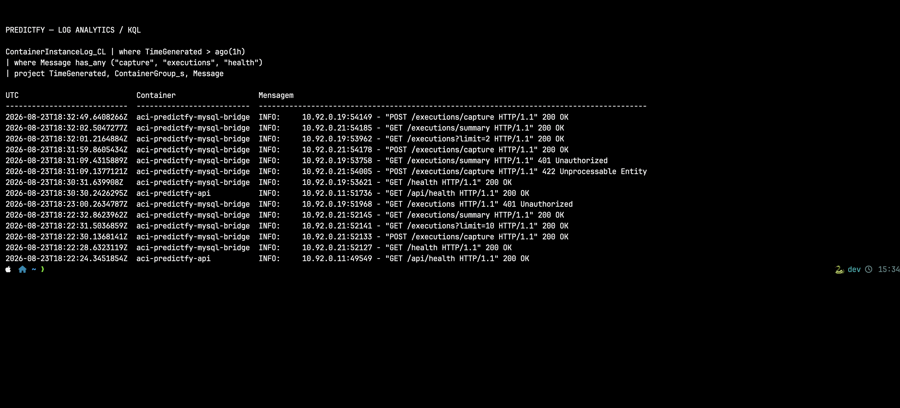
Continuação do resultado, incluindo inicialização da API e do bridge.
| UTC | Container | Mensagem |
|---|---|---|
| 2026-08-23T18:31:59.8605434Z | aci-predictfy-mysql-bridge | INFO: 10.92.0.21:54178 - "POST /executions/capture HTTP/1.1" 200 OK |
| 2026-08-23T18:31:09.4315889Z | aci-predictfy-mysql-bridge | INFO: 10.92.0.19:53758 - "GET /executions/summary HTTP/1.1" 401 Unauthorized |
| 2026-08-23T18:31:09.1377121Z | aci-predictfy-mysql-bridge | INFO: 10.92.0.21:54005 - "POST /executions/capture HTTP/1.1" 422 Unprocessable Entity |
| 2026-08-23T18:30:31.639908Z | aci-predictfy-mysql-bridge | INFO: 10.92.0.19:53621 - "GET /health HTTP/1.1" 200 OK |
| 2026-08-23T18:30:30.2426295Z | aci-predictfy-api | INFO: 10.92.0.11:51736 - "GET /api/health HTTP/1.1" 200 OK |
| 2026-08-23T18:23:00.2634787Z | aci-predictfy-mysql-bridge | INFO: 10.92.0.19:51968 - "GET /executions HTTP/1.1" 401 Unauthorized |
| 2026-08-23T18:22:32.8623962Z | aci-predictfy-mysql-bridge | INFO: 10.92.0.21:52145 - "GET /executions/summary HTTP/1.1" 200 OK |
| 2026-08-23T18:22:31.5036859Z | aci-predictfy-mysql-bridge | INFO: 10.92.0.21:52141 - "GET /executions?limit=10 HTTP/1.1" 200 OK |
Evidência 5B — total de 16 registros reais, sem linhas simuladas.
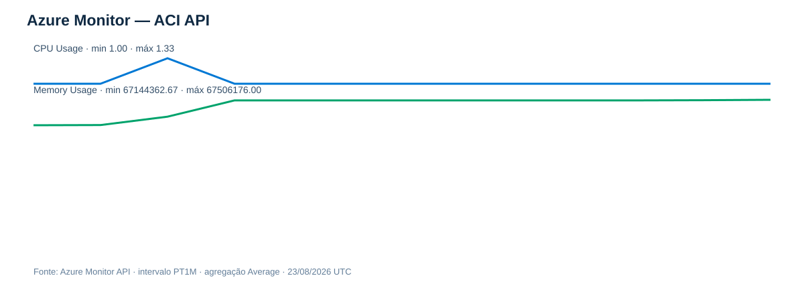
As séries contêm amostras reais após o início do container. Pontos anteriores sem valor foram omitidos do gráfico, sem interpolação.
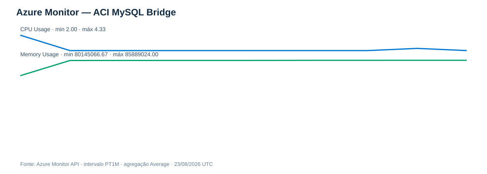
O bridge apresentou atividade coerente com a janela de health, captura, listagem e agregação.
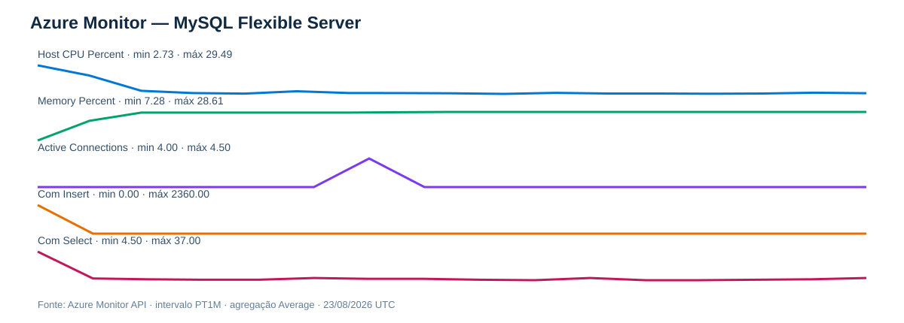
Foram coletados CPU, memória, conexões ativas, INSERT e SELECT. As séries foram preservadas integralmente em JSON.
union withsource=Tabela requests, dependencies, exceptions, customMetrics | where timestamp > ago(1h) | summarize Registros=count() by Tabela | order by Tabela asc
| Tabela | Registros |
|---|---|
| customMetrics | 1 |
| dependencies | 3 |
| exceptions | 1 |
O recebimento de dependencies, exceptions e customMetrics comprova instrumentação efetiva por OpenTelemetry — não apenas a criação do recurso.
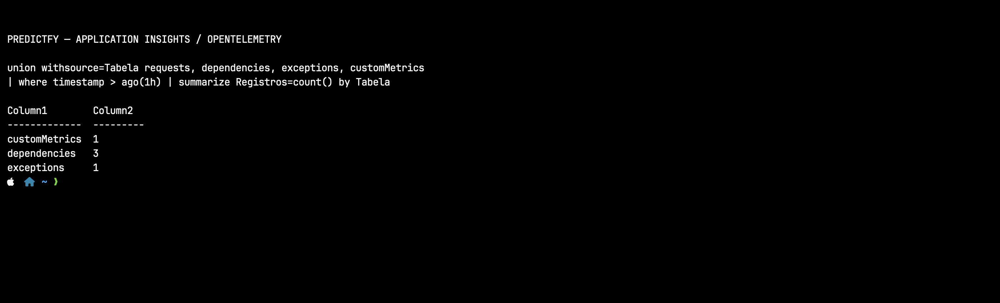
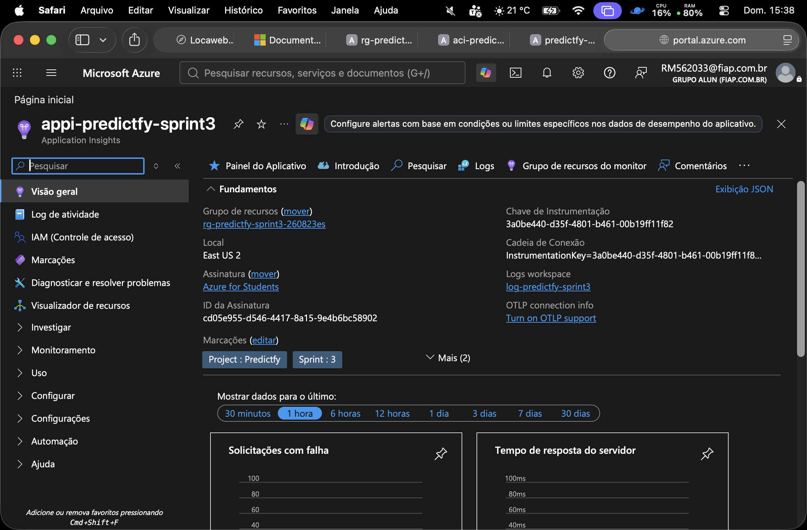
Data da execução: 23/08/2026 Resource Group: rg-predictfy-sprint3-260823es Comando: bash 'Sprint 3/01_cloud/iac/99_destroy.sh' Resultado do script: CONFIRMADO: Resource Group removido e recursos encerrados. Verificação independente: az group exists --name rg-predictfy-sprint3-260823es Retorno: false
O ACR Basic, os ACIs mínimos e o MySQL B1ms reduziram custo. Após a coleta, 99_destroy.sh validou o padrão seguro do Resource Group, exigiu o marcador de evidências e removeu o grupo integralmente. Os JSONs, logs e capturas preservam a comprovação da execução de 23/08/2026.
Referências: enunciado Locaweb — Sprint 3 Cloud, páginas 33–35; Microsoft Learn — Architecture Icons, ACR, ACI, Azure Database for MySQL, Azure Monitor, Log Analytics e Application Insights; Microsoft Azure Public Service Icons V24.